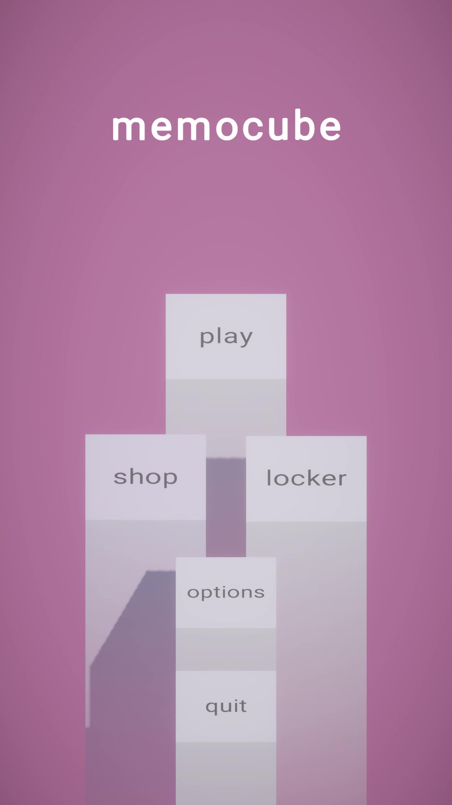
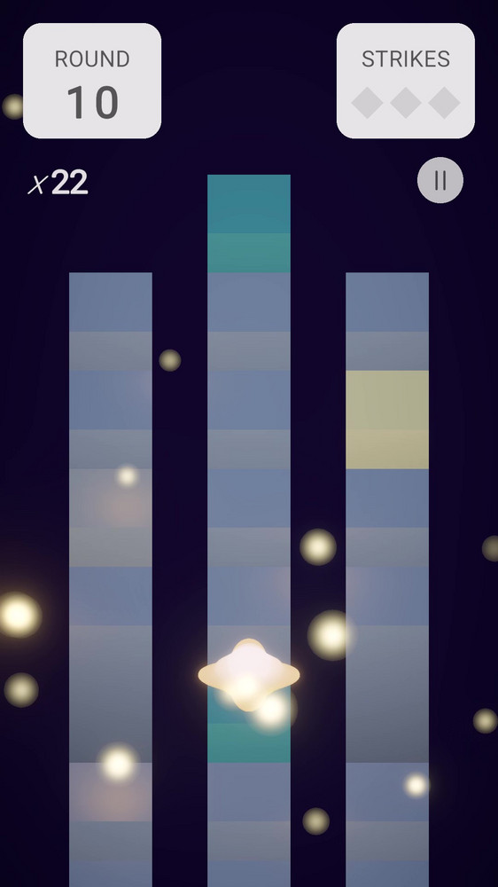
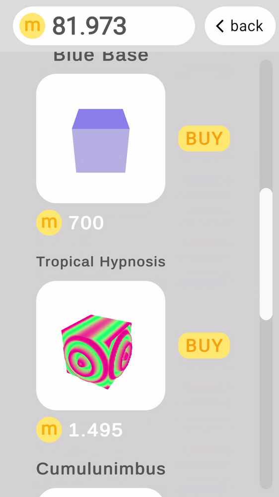
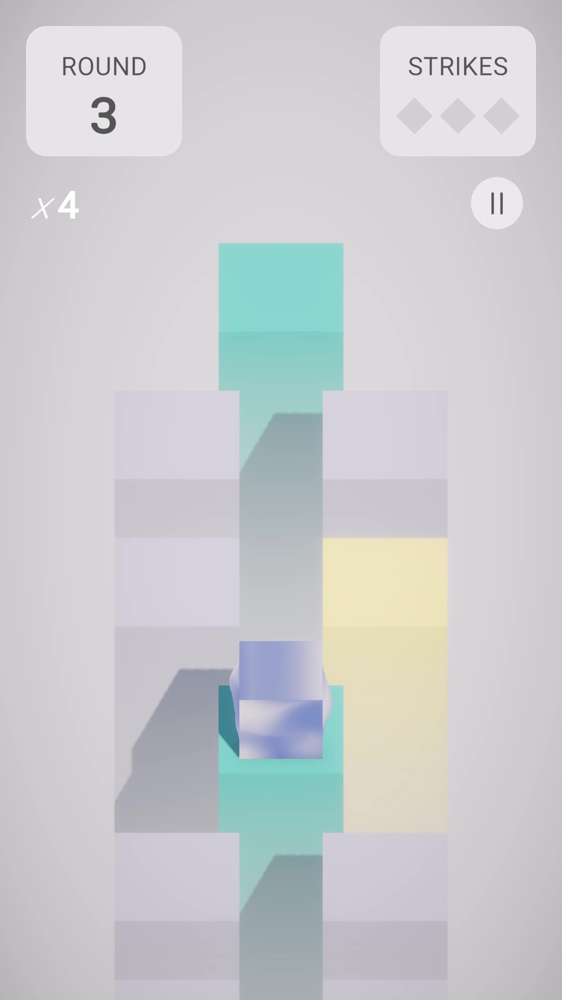

Find your way through different paths, guess the correct pattern and reach your high-score! Earn memocoins with each game that you play. With these coins you can personalize your own cube to match your aesthetic!
This is the beta version (itch.io), with a limited amount of content that will continue to grow in the future:
Credits:
This game is solo-developed by Manel Palacín, including all the game assets, audio, and game mechanics. The project was built using UnityEngine6 and C#. Find the source code here (GitHub Repo).




Game features & mechanics
Skins (geometry and fragment shaders over a cube).
Currency system (memocoins).
Score system.
Randomly generated pattern each game round.
Purchase system in-game with the game's currency in the game shop.
JSON serialization to store persistent data across game loads and saves, such as memocoins, purchased skins, etc.
Previewing and equipping items in the locker.
State machine to drive game scene logic.
Custom animations using Unity's animation system and also using DOTween's external library
What's coming next?
New skins.
New fast-paced game mode "Frenzy".
Trail customization for deeper personalization.
Daily quests and rewards.
And more!
Space Impact Reconstruction
Last update: October 2025
This is a reconstructed version from scratch of the iconic Nokia phone retro game "Space Impact". This project was done entirely by code in C++, with the usage of Raylib's library to handle windows, input and rendering. This project is not for any kind of commercial purpose.
Featured skills used in this project
C++ & Raylib
Memory managed with smart pointers.
Scene management.
Score system.
Audio system.
Enemies and projectile management with its respective collisions.
You may find the source code here .
Mario World Reconstruction
Last update: October 2025
This is a reconstructed version from scratch of the main platformer mechanics from the legendary "Super Mario World" SNES console game. This project was also done entirely by code in C++, with the usage of Raylib's library to handle windows, input and rendering.
The purpose of this game was to design a more complex collision system than Space Impact, where raycasting is involved to check directional collisions.
This project is not for any kind of commercial purpose.
Featured skills used in this project
C++ & Raylib.
Raycasting, collision detection and one-way platforms.
Animations through sprite sheets and state machines for the characters and enemies.
Enemies and projectile management.
Parallax.
Memory managed with smart pointers.
Scene management.
Ribbit, Ribbeat!
Last update: June 2025
It consists of a survival/roguelite-style game developed in Unity in which you are a frog that must gobble up as many insects as possible to avoid starving to death. The objective of the game is clear: survive and reach the highest possible level. This means keeping an eye on your hunger level and being careful not to catch a bomb. If the player gets three strikes or dies of hunger, it’s Game Over.
To see more details about the game and it's main mechanics, please go to the Gitlab repository for this project: Gitlab Link
Featured skills used in this project
C# & Unity.
Line renderer components.
Enemy spawning controlled by difficulty curve.
Scriptable objects.
Your Plant
Last update: June 2025
This project showcased a prototype of the plant & flower randomized growth algorithm which I used for the idea of creating a garden simulation game.
The idea behind it was that the trunk of the plant would grow and branch out using a set of parameters: maxHeight, maxBranches, nodeAngle...
Each branch would have edges divided by nodes, which store the world position and are used later in a line renderer component to render the plant's body.
Each node is generated from the previous one, simply offseting it by some angle and height; it also has a chance of creating a new whole branch from itself.
Finally, the flowers are generated generally at the tip of each branch, giving results as follows:
This game prototype has a detailed game design document (GDD) that can be downloaded here:
This section is a set of exercises done showcasing AI techniques and steering behaviors used in a lot of videogames. As these were developed in Unity, the use of NavMesh to drive agents and walkable surfaces is well throughout all of these exercises.
Aside from standard C# programming, this project also included the use of the Visual Scripting and Behavior Tree modules from Unity.
Wandering:
This part shows a purple agent wandering through a set of random destination points. Once the destination is reached, the next destination is set after waiting a random amount of time.
Patrolling:
This part shows an agent patrolling through a set of fixed destination points. Once the destination is reached, the next destination is set after waiting a random amount of time.
Also a video of the same behavior but instead of an individual, a group consisting of a leader and its followers follow these destinations.
Fleeing & Detection:
This part shows a blue agent patrolling through a set of fixed destination points, however, if it sees a purple enemy, it flees in the opposite direction, and faster.
If the agent gets out of its range, it goes to patrolling again.
Flocking:
This section shows a typical flocking algorithm, resembling a hive of insects of some sort, that act as an obstacle for the agents.
Flocking leader / Detection / Chasing:
This section shows the previous flock chasing a group of agents if they enter certain area around the hive. The flock follows its leader (red sphere), which chases the first agent that is inside the area.
If the agents leave the hive range, the flock defaults again to normal flocking behavior.